SAR detection review
All 939 labeled holdout images, confidence ≥ 0.05, matching IoU ≥ 0.5.
Diagnostic counts use greedy class-aware matching; they are not COCO mAP. A missed object here may have a prediction below the selected confidence threshold.
Model objects matched missed missed small wrong class duplicate localization background terramind_pretrained_moelora 3281 2607 674 497 11 459 3622 10487
Saved COCO AP by class These AP scores come from each run's full validation evaluation; the gallery confidence filter does not change them.
Class terramind_pretrained_moelora AP (%) aircraft 41.04 airport 49.36 bridge 3.19 car 56.02 harbor 45.18 oil_tank 44.12 playground 2.88 ship 39.04 wind_turbine 39.04
The first panel shows only the correct annotations, with every box in green. The model panels add predictions and mark annotation matches using the following legend.
Green: matched ground truth · Orange: unmatched ground truth ·
Blue: matching prediction · Yellow: duplicate ·
Purple: inaccurate location · Red: wrong class / background
Small = area below one 16×16 patch after resizing to 512×512. Every ground-truth box is drawn; at most 20 predictions are drawn per panel. Summary counts include all eligible predictions. Examples are selected for errors and class coverage.
Class All aircraft airport bridge car harbor oil_tank playground ship wind_turbine
Error All Missed small objects
Missed objects Wrong class Duplicates
Inaccurate boxes Image 160: harbor — 1 objects images/00160.png
Ground truth only — correct boxes Class: harbor; 1 annotated objects. All boxes are green.
terramind_pretrained_moelora matched: 1, missed: 0, wrong_class: 0, duplicate: 1, localization: 14
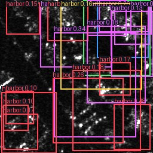
Image 1705: airport — 1 objects images/01705.jpg
Ground truth only — correct boxes Class: airport; 1 annotated objects. All boxes are green.
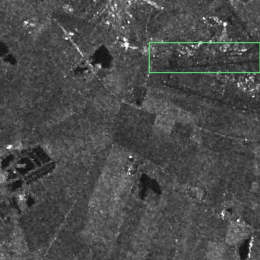
terramind_pretrained_moelora matched: 1, missed: 0, wrong_class: 0, duplicate: 0, localization: 15
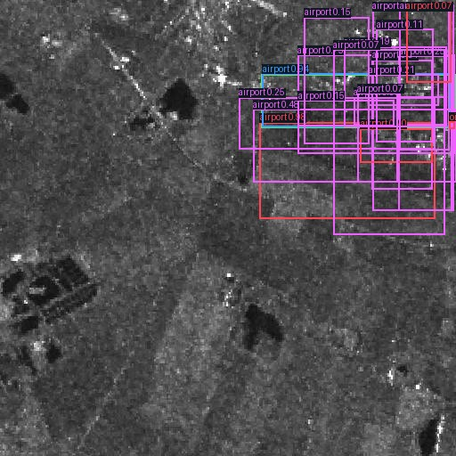
Image 5332: airport — 1 objects images/05332.jpg
Ground truth only — correct boxes Class: airport; 1 annotated objects. All boxes are green.
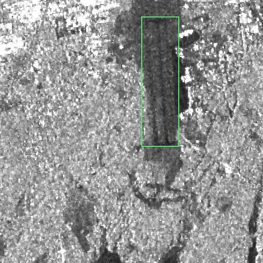
terramind_pretrained_moelora matched: 1, missed: 0, wrong_class: 0, duplicate: 1, localization: 13
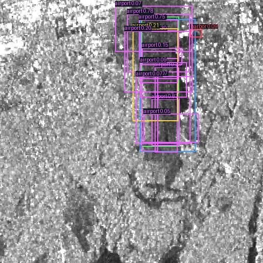
Image 2210: bridge — 1 objects images/02210.png
Ground truth only — correct boxes Class: bridge; 1 annotated objects. All boxes are green.
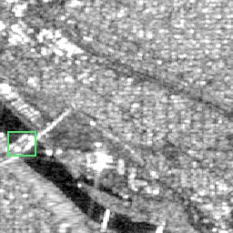
terramind_pretrained_moelora matched: 1, missed: 0, wrong_class: 1, duplicate: 1, localization: 10
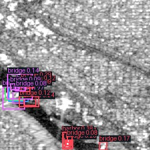
Image 4082: bridge — 1 objects images/04082.jpg
Ground truth only — correct boxes Class: bridge; 1 annotated objects. All boxes are green.
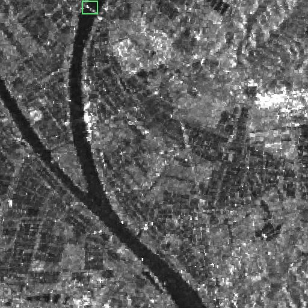
terramind_pretrained_moelora matched: 1, missed: 0, wrong_class: 0, duplicate: 0, localization: 13
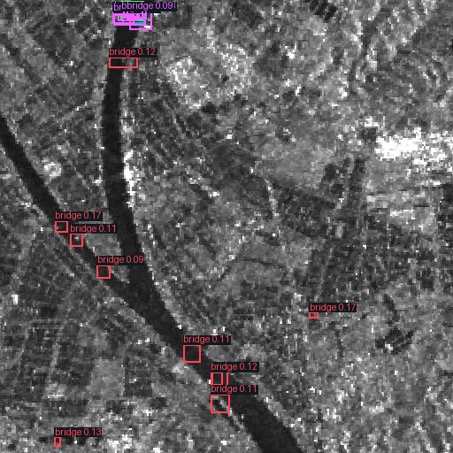
Image 2259: bridge — 4 objects images/02259.png
Ground truth only — correct boxes Class: bridge; 4 annotated objects. All boxes are green.
terramind_pretrained_moelora matched: 4, missed: 0, wrong_class: 0, duplicate: 0, localization: 43
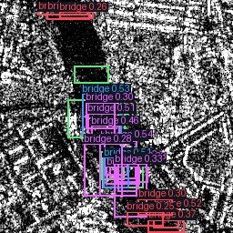
Image 5753: harbor — 1 objects images/05753.png
Ground truth only — correct boxes Class: harbor; 1 annotated objects. All boxes are green.
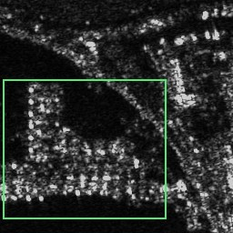
terramind_pretrained_moelora matched: 1, missed: 0, wrong_class: 0, duplicate: 0, localization: 10
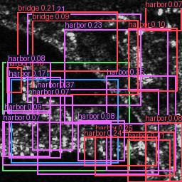
Image 6476: airport — 1 objects images/06476.jpg
Ground truth only — correct boxes Class: airport; 1 annotated objects. All boxes are green.
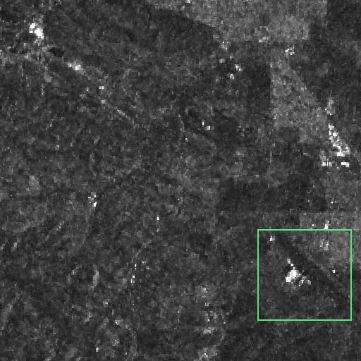
terramind_pretrained_moelora matched: 1, missed: 0, wrong_class: 0, duplicate: 2, localization: 8
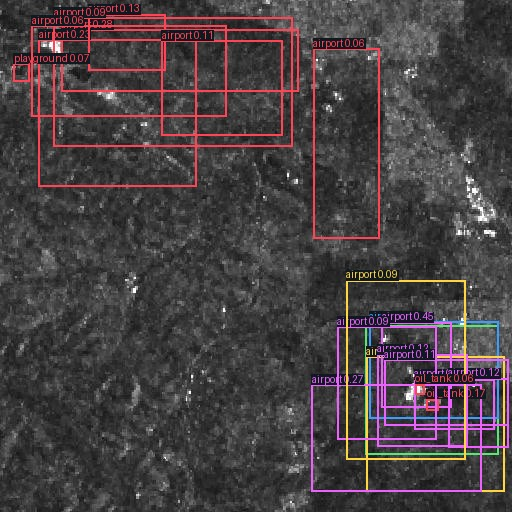
Image 7592: harbor — 3 objects images/07592.png
Ground truth only — correct boxes Class: harbor; 3 annotated objects. All boxes are green.
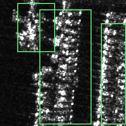
terramind_pretrained_moelora matched: 3, missed: 0, wrong_class: 0, duplicate: 3, localization: 24
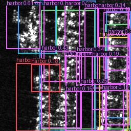
Image 8312: playground — 1 objects images/08312.jpg
Ground truth only — correct boxes Class: playground; 1 annotated objects. All boxes are green.
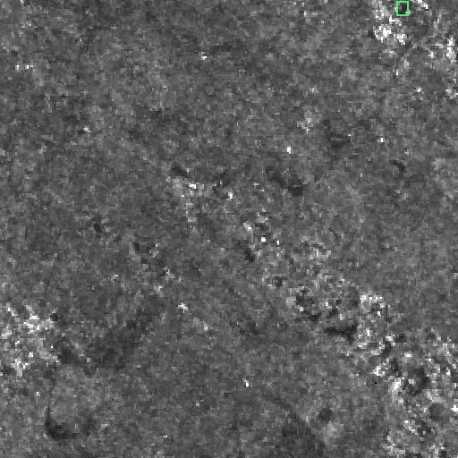
terramind_pretrained_moelora matched: 1, missed: 0, wrong_class: 0, duplicate: 2, localization: 6
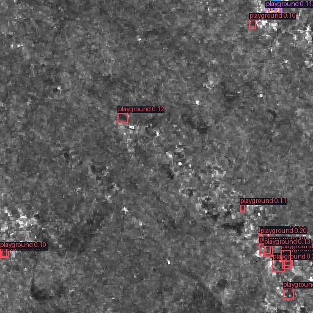
Image 974: ship — 1 objects images/00974.jpg
Ground truth only — correct boxes Class: ship; 1 annotated objects. All boxes are green.
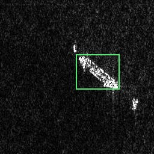
terramind_pretrained_moelora matched: 1, missed: 0, wrong_class: 0, duplicate: 1, localization: 6
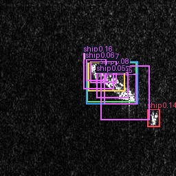
Image 5990: ship — 2 objects images/05990.jpg
Ground truth only — correct boxes Class: ship; 2 annotated objects. All boxes are green.
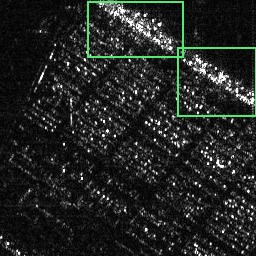
terramind_pretrained_moelora matched: 2, missed: 0, wrong_class: 2, duplicate: 1, localization: 8
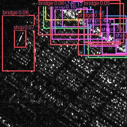
Image 897: playground — 1 objects images/00897.jpg
Ground truth only — correct boxes Class: playground; 1 annotated objects. All boxes are green.
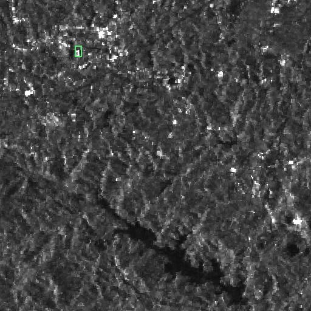
terramind_pretrained_moelora matched: 0, missed: 1, wrong_class: 0, duplicate: 0, localization: 2
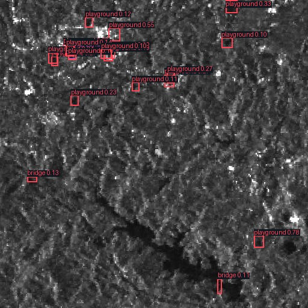
Image 1444: playground — 1 objects images/01444.jpg
Ground truth only — correct boxes Class: playground; 1 annotated objects. All boxes are green.
terramind_pretrained_moelora matched: 0, missed: 1, wrong_class: 0, duplicate: 0, localization: 2
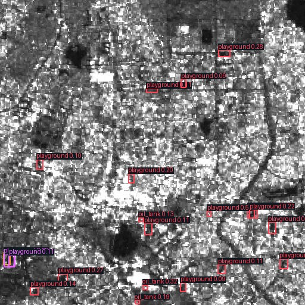
Image 5633: ship — 1 objects images/05633.jpg
Ground truth only — correct boxes Class: ship; 1 annotated objects. All boxes are green.
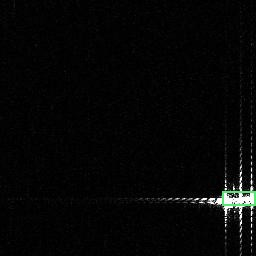
terramind_pretrained_moelora matched: 0, missed: 1, wrong_class: 0, duplicate: 0, localization: 5
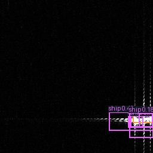
Image 3471: wind_turbine — 11 objects images/03471.jpg
Ground truth only — correct boxes Class: wind_turbine; 11 annotated objects. All boxes are green.
terramind_pretrained_moelora matched: 6, missed: 5, wrong_class: 0, duplicate: 1, localization: 37
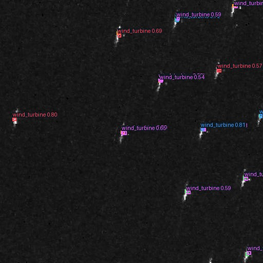
Image 4246: aircraft — 1 objects images/04246.jpg
Ground truth only — correct boxes Class: aircraft; 1 annotated objects. All boxes are green.
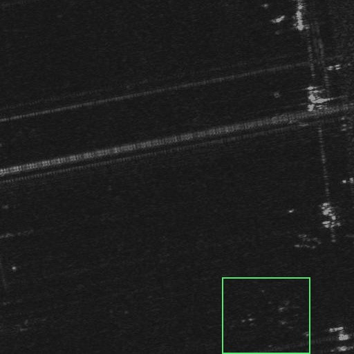
terramind_pretrained_moelora matched: 1, missed: 0, wrong_class: 0, duplicate: 0, localization: 5
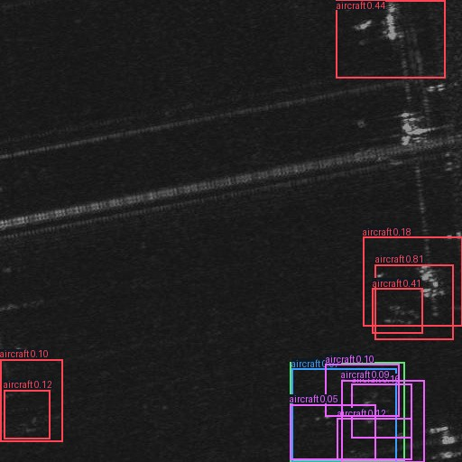
Image 5900: aircraft — 1 objects images/05900.jpg
Ground truth only — correct boxes Class: aircraft; 1 annotated objects. All boxes are green.
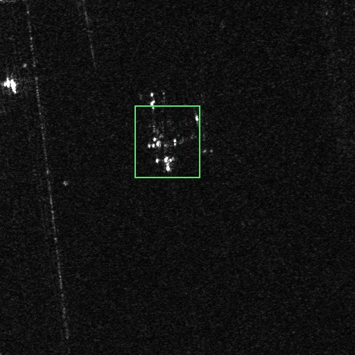
terramind_pretrained_moelora matched: 1, missed: 0, wrong_class: 0, duplicate: 1, localization: 4
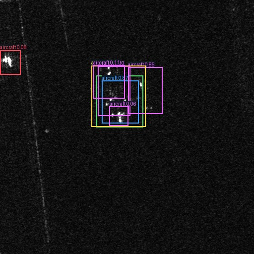
Image 8347: aircraft — 1 objects images/08347.jpg
Ground truth only — correct boxes Class: aircraft; 1 annotated objects. All boxes are green.
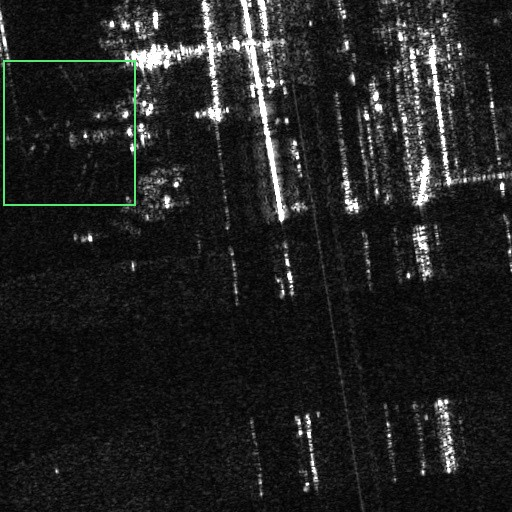
terramind_pretrained_moelora matched: 1, missed: 0, wrong_class: 0, duplicate: 0, localization: 5
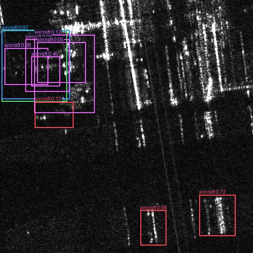
Image 5793: wind_turbine — 11 objects images/05793.jpg
Ground truth only — correct boxes Class: wind_turbine; 11 annotated objects. All boxes are green.
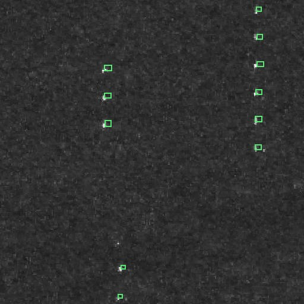
terramind_pretrained_moelora matched: 2, missed: 9, wrong_class: 0, duplicate: 0, localization: 13
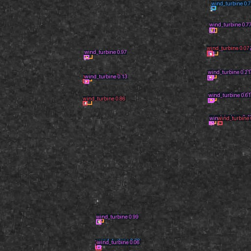
Image 6997: wind_turbine — 17 objects images/06997.jpg
Ground truth only — correct boxes Class: wind_turbine; 17 annotated objects. All boxes are green.
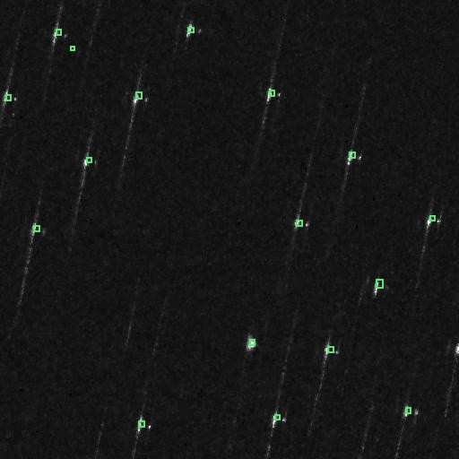
terramind_pretrained_moelora matched: 14, missed: 3, wrong_class: 0, duplicate: 5, localization: 55
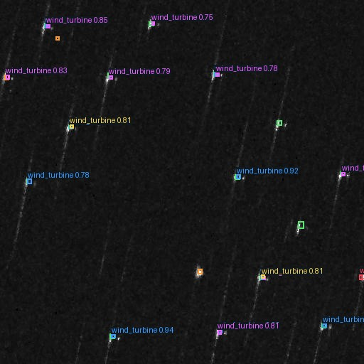
Image 16: oil_tank — 6 objects images/00016.jpg
Ground truth only — correct boxes Class: oil_tank; 6 annotated objects. All boxes are green.
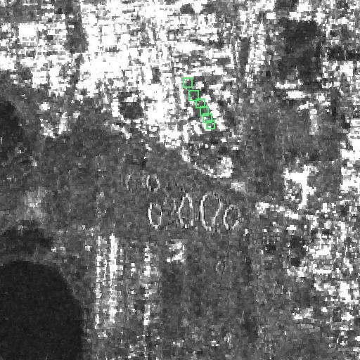
terramind_pretrained_moelora matched: 0, missed: 6, wrong_class: 0, duplicate: 0, localization: 0
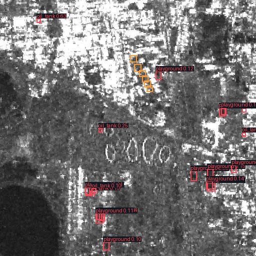
Image 879: oil_tank — 2 objects images/00879.jpg
Ground truth only — correct boxes Class: oil_tank; 2 annotated objects. All boxes are green.
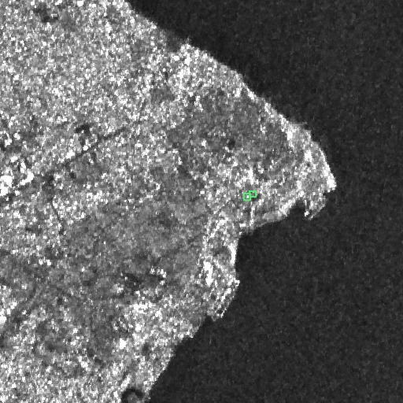
terramind_pretrained_moelora matched: 0, missed: 2, wrong_class: 0, duplicate: 0, localization: 0
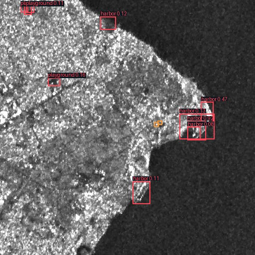
Image 1374: oil_tank — 1 objects images/01374.jpg
Ground truth only — correct boxes Class: oil_tank; 1 annotated objects. All boxes are green.
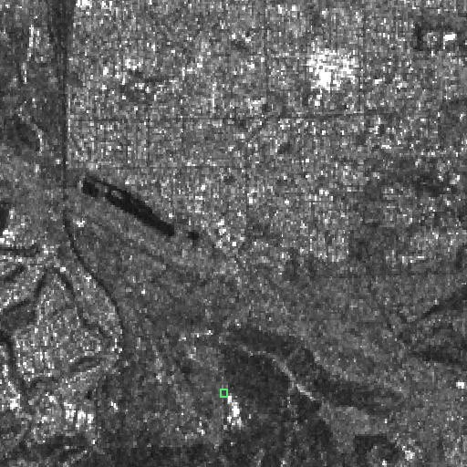
terramind_pretrained_moelora matched: 0, missed: 1, wrong_class: 0, duplicate: 0, localization: 0
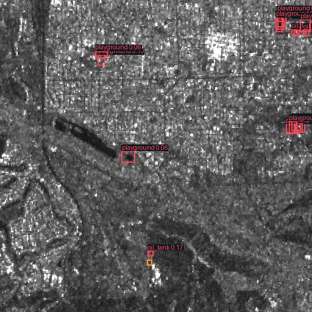
Image 2889: car — 7 objects images/02889.jpg
Ground truth only — correct boxes Class: car; 7 annotated objects. All boxes are green.
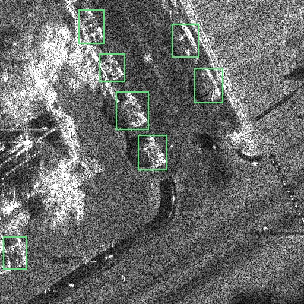
terramind_pretrained_moelora matched: 7, missed: 0, wrong_class: 0, duplicate: 2, localization: 16
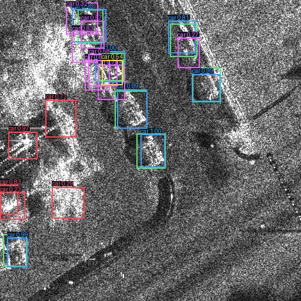
Image 358: car — 4 objects images/00358.jpg
Ground truth only — correct boxes Class: car; 4 annotated objects. All boxes are green.
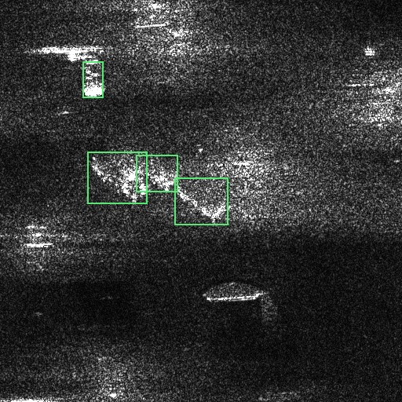
terramind_pretrained_moelora matched: 4, missed: 0, wrong_class: 0, duplicate: 2, localization: 8
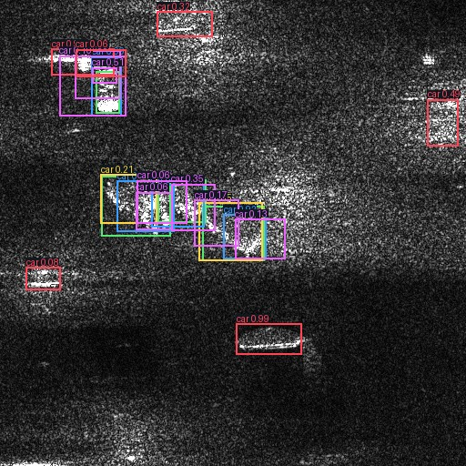
Image 7822: car — 13 objects images/07822.jpg
Ground truth only — correct boxes Class: car; 13 annotated objects. All boxes are green.
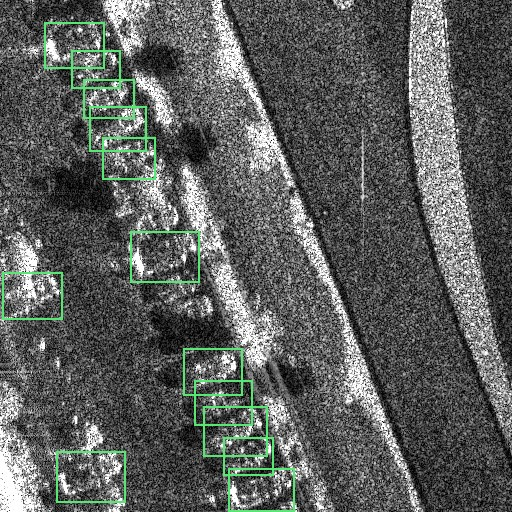
terramind_pretrained_moelora matched: 13, missed: 0, wrong_class: 1, duplicate: 4, localization: 24
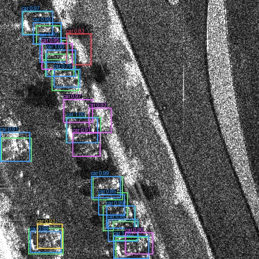
Image 3118: airport — 1 objects images/03118.jpg
Ground truth only — correct boxes Class: airport; 1 annotated objects. All boxes are green.
terramind_pretrained_moelora matched: 1, missed: 0, wrong_class: 0, duplicate: 1, localization: 8
Image 6013: bridge — 1 objects images/06013.jpg
Ground truth only — correct boxes Class: bridge; 1 annotated objects. All boxes are green.
terramind_pretrained_moelora matched: 0, missed: 1, wrong_class: 0, duplicate: 0, localization: 5
Image 9328: bridge — 3 objects images/09328.jpg
Ground truth only — correct boxes Class: bridge; 3 annotated objects. All boxes are green.
terramind_pretrained_moelora matched: 1, missed: 2, wrong_class: 0, duplicate: 1, localization: 23
Image 2221: bridge — 4 objects images/02221.jpg
Ground truth only — correct boxes Class: bridge; 4 annotated objects. All boxes are green.
terramind_pretrained_moelora matched: 1, missed: 3, wrong_class: 0, duplicate: 0, localization: 21
Image 77: airport — 1 objects images/00077.jpg
Ground truth only — correct boxes Class: airport; 1 annotated objects. All boxes are green.
terramind_pretrained_moelora matched: 1, missed: 0, wrong_class: 0, duplicate: 0, localization: 8
Image 1065: airport — 1 objects images/01065.jpg
Ground truth only — correct boxes Class: airport; 1 annotated objects. All boxes are green.
terramind_pretrained_moelora matched: 1, missed: 0, wrong_class: 0, duplicate: 0, localization: 8
Image 2897: bridge — 3 objects images/02897.jpg
Ground truth only — correct boxes Class: bridge; 3 annotated objects. All boxes are green.
terramind_pretrained_moelora matched: 1, missed: 2, wrong_class: 0, duplicate: 1, localization: 15
Image 3153: bridge — 1 objects images/03153.png
Ground truth only — correct boxes Class: bridge; 1 annotated objects. All boxes are green.
terramind_pretrained_moelora matched: 1, missed: 0, wrong_class: 0, duplicate: 1, localization: 7
Image 4962: bridge — 2 objects images/04962.jpg
Ground truth only — correct boxes Class: bridge; 2 annotated objects. All boxes are green.
terramind_pretrained_moelora matched: 0, missed: 2, wrong_class: 0, duplicate: 0, localization: 8
Image 6208: airport — 2 objects images/06208.jpg
Ground truth only — correct boxes Class: airport; 2 annotated objects. All boxes are green.
terramind_pretrained_moelora matched: 2, missed: 0, wrong_class: 0, duplicate: 3, localization: 12
Image 7112: bridge — 2 objects images/07112.jpg
Ground truth only — correct boxes Class: bridge; 2 annotated objects. All boxes are green.
terramind_pretrained_moelora matched: 0, missed: 2, wrong_class: 0, duplicate: 0, localization: 7
Image 1030: bridge — 1 objects images/01030.png
Ground truth only — correct boxes Class: bridge; 1 annotated objects. All boxes are green.
terramind_pretrained_moelora matched: 1, missed: 0, wrong_class: 0, duplicate: 0, localization: 7
Image 1186: bridge — 1 objects images/01186.png
Ground truth only — correct boxes Class: bridge; 1 annotated objects. All boxes are green.
terramind_pretrained_moelora matched: 0, missed: 1, wrong_class: 0, duplicate: 0, localization: 6
Image 1437: bridge — 1 objects images/01437.jpg
Ground truth only — correct boxes Class: bridge; 1 annotated objects. All boxes are green.
terramind_pretrained_moelora matched: 1, missed: 0, wrong_class: 0, duplicate: 1, localization: 6
Image 2856: bridge — 1 objects images/02856.png
Ground truth only — correct boxes Class: bridge; 1 annotated objects. All boxes are green.
terramind_pretrained_moelora matched: 1, missed: 0, wrong_class: 0, duplicate: 2, localization: 5
Image 4097: harbor — 2 objects images/04097.png
Ground truth only — correct boxes Class: harbor; 2 annotated objects. All boxes are green.
terramind_pretrained_moelora matched: 2, missed: 0, wrong_class: 0, duplicate: 2, localization: 12
Image 5789: bridge — 1 objects images/05789.png
Ground truth only — correct boxes Class: bridge; 1 annotated objects. All boxes are green.
terramind_pretrained_moelora matched: 1, missed: 0, wrong_class: 0, duplicate: 0, localization: 7
Image 8509: harbor — 1 objects images/08509.png
Ground truth only — correct boxes Class: harbor; 1 annotated objects. All boxes are green.
terramind_pretrained_moelora matched: 1, missed: 0, wrong_class: 0, duplicate: 1, localization: 6
Image 5303: airport — 2 objects images/05303.jpg
Ground truth only — correct boxes Class: airport; 2 annotated objects. All boxes are green.
terramind_pretrained_moelora matched: 2, missed: 0, wrong_class: 0, duplicate: 1, localization: 12
Image 8842: bridge — 4 objects images/08842.jpg
Ground truth only — correct boxes Class: bridge; 4 annotated objects. All boxes are green.
terramind_pretrained_moelora matched: 1, missed: 3, wrong_class: 0, duplicate: 2, localization: 11
Image 88: airport — 1 objects images/00088.jpg
Ground truth only — correct boxes Class: airport; 1 annotated objects. All boxes are green.
terramind_pretrained_moelora matched: 1, missed: 0, wrong_class: 0, duplicate: 1, localization: 5
Image 373: bridge — 1 objects images/00373.png
Ground truth only — correct boxes Class: bridge; 1 annotated objects. All boxes are green.
terramind_pretrained_moelora matched: 1, missed: 0, wrong_class: 0, duplicate: 0, localization: 6
Image 1324: airport — 1 objects images/01324.jpg
Ground truth only — correct boxes Class: airport; 1 annotated objects. All boxes are green.
terramind_pretrained_moelora matched: 1, missed: 0, wrong_class: 0, duplicate: 0, localization: 6
Image 1335: bridge — 4 objects images/01335.jpg
Ground truth only — correct boxes Class: bridge; 4 annotated objects. All boxes are green.
terramind_pretrained_moelora matched: 1, missed: 3, wrong_class: 0, duplicate: 0, localization: 12
Image 1482: playground — 2 objects images/01482.jpg
Ground truth only — correct boxes Class: playground; 2 annotated objects. All boxes are green.
terramind_pretrained_moelora matched: 0, missed: 2, wrong_class: 0, duplicate: 0, localization: 7
Image 3174: bridge — 1 objects images/03174.jpg
Ground truth only — correct boxes Class: bridge; 1 annotated objects. All boxes are green.
terramind_pretrained_moelora matched: 0, missed: 1, wrong_class: 0, duplicate: 0, localization: 2
Image 3727: harbor — 2 objects images/03727.png
Ground truth only — correct boxes Class: harbor; 2 annotated objects. All boxes are green.
terramind_pretrained_moelora matched: 2, missed: 0, wrong_class: 0, duplicate: 1, localization: 11
Image 4676: bridge — 1 objects images/04676.png
Ground truth only — correct boxes Class: bridge; 1 annotated objects. All boxes are green.
terramind_pretrained_moelora matched: 1, missed: 0, wrong_class: 0, duplicate: 1, localization: 5
Image 5060: harbor — 1 objects images/05060.jpg
Ground truth only — correct boxes Class: harbor; 1 annotated objects. All boxes are green.
terramind_pretrained_moelora matched: 0, missed: 1, wrong_class: 0, duplicate: 0, localization: 5
Image 5470: bridge — 2 objects images/05470.jpg
Ground truth only — correct boxes Class: bridge; 2 annotated objects. All boxes are green.
terramind_pretrained_moelora matched: 1, missed: 1, wrong_class: 0, duplicate: 1, localization: 7
Image 5540: bridge — 1 objects images/05540.jpg
Ground truth only — correct boxes Class: bridge; 1 annotated objects. All boxes are green.
terramind_pretrained_moelora matched: 0, missed: 1, wrong_class: 0, duplicate: 0, localization: 2
Image 6003: harbor — 1 objects images/06003.png
Ground truth only — correct boxes Class: harbor; 1 annotated objects. All boxes are green.
terramind_pretrained_moelora matched: 1, missed: 0, wrong_class: 0, duplicate: 0, localization: 6
Image 6438: bridge — 1 objects images/06438.jpg
Ground truth only — correct boxes Class: bridge; 1 annotated objects. All boxes are green.
terramind_pretrained_moelora matched: 0, missed: 1, wrong_class: 0, duplicate: 0, localization: 2
Image 6740: playground — 1 objects images/06740.jpg
Ground truth only — correct boxes Class: playground; 1 annotated objects. All boxes are green.
terramind_pretrained_moelora matched: 0, missed: 1, wrong_class: 0, duplicate: 0, localization: 2
Image 6896: bridge — 5 objects images/06896.jpg
Ground truth only — correct boxes Class: bridge; 5 annotated objects. All boxes are green.
terramind_pretrained_moelora matched: 0, missed: 5, wrong_class: 0, duplicate: 0, localization: 10
Image 7913: bridge — 1 objects images/07913.jpg
Ground truth only — correct boxes Class: bridge; 1 annotated objects. All boxes are green.
terramind_pretrained_moelora matched: 0, missed: 1, wrong_class: 0, duplicate: 0, localization: 2
Image 8669: airport — 1 objects images/08669.jpg
Ground truth only — correct boxes Class: airport; 1 annotated objects. All boxes are green.
terramind_pretrained_moelora matched: 1, missed: 0, wrong_class: 0, duplicate: 0, localization: 6
Image 9369: playground — 1 objects images/09369.jpg
Ground truth only — correct boxes Class: playground; 1 annotated objects. All boxes are green.
terramind_pretrained_moelora matched: 0, missed: 1, wrong_class: 0, duplicate: 0, localization: 2
Image 1796: bridge — 5 objects images/01796.jpg
Ground truth only — correct boxes Class: bridge; 5 annotated objects. All boxes are green.
terramind_pretrained_moelora matched: 1, missed: 4, wrong_class: 0, duplicate: 0, localization: 13
Image 5260: bridge — 5 objects images/05260.jpg
Ground truth only — correct boxes Class: bridge; 5 annotated objects. All boxes are green.
terramind_pretrained_moelora matched: 2, missed: 3, wrong_class: 0, duplicate: 1, localization: 16
Image 5344: bridge — 8 objects images/05344.jpg
Ground truth only — correct boxes Class: bridge; 8 annotated objects. All boxes are green.
terramind_pretrained_moelora matched: 5, missed: 3, wrong_class: 0, duplicate: 2, localization: 31
Image 586: bridge — 2 objects images/00586.jpg
Ground truth only — correct boxes Class: bridge; 2 annotated objects. All boxes are green.
terramind_pretrained_moelora matched: 2, missed: 0, wrong_class: 0, duplicate: 1, localization: 10
Image 2578: airport — 2 objects images/02578.jpg
Ground truth only — correct boxes Class: airport; 2 annotated objects. All boxes are green.
terramind_pretrained_moelora matched: 2, missed: 0, wrong_class: 0, duplicate: 0, localization: 11
Image 4634: airport — 2 objects images/04634.jpg
Ground truth only — correct boxes Class: airport; 2 annotated objects. All boxes are green.
terramind_pretrained_moelora matched: 1, missed: 1, wrong_class: 0, duplicate: 1, localization: 9
Image 8073: bridge — 8 objects images/08073.jpg
Ground truth only — correct boxes Class: bridge; 8 annotated objects. All boxes are green.
terramind_pretrained_moelora matched: 5, missed: 3, wrong_class: 0, duplicate: 2, localization: 33